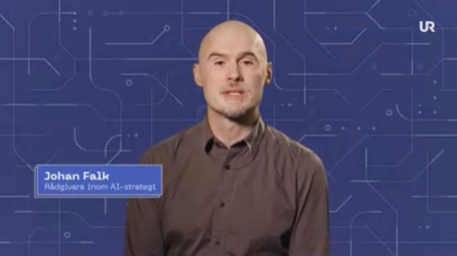
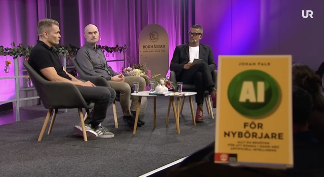
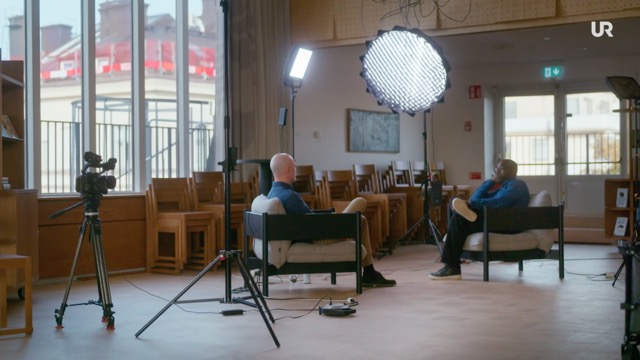

Utvalda inslag
 ▶
▶
The Cognitive Revolution: Education in the AI Age
Samtal med Nathan Labenz om AI i utbildning, lärande och samhälle. En av de mest lyssnade AI-poddarna i världen.
 ▶
▶
Presentation för Regeringskansliet
Föreläsning om AI:s betydelse för samhället och världen, på svenska och engelska.
Fyra AI-lektioner för elever på högstadiet och gymnasiet
Onlinelektioner om AI riktade till elever på gymnasiet och högstadiet.

▶UR: Uppdrag AI
Serie om AI i samhälle och skola från Utbildningsradion.
Nyheterna TV4: AI i undervisning
Intervju i TV4:s nyhetsprogram om AI i skolan.

▶Bokmässan 2024: AI – möjligheter och risker i skolans värld
Samtal på Bokmässan om AI i skolan, inspelat av UR.

▶Utbildningsradion: Vem ska jag tro på?
Om AI och fördomar – hur AI-system kan förstärka eller motverka snedvridningar.
 ▶
▶
Det viktigaste om AI och skola på 12 minuter
Förinspelning av föreläsning på Sett-mässan 2026.
DN Debatt: Inte säkert att AI-vännen är din bästa kompis
Om riskerna med AI-relationer och vad de innebär för barn och unga.
SvD: AI-strategi bör inkludera skolan
Debattartikel om varför skolans AI-arbete behöver nationell samordning.
Guldäpplejuryns särskilda pris 2024
Priset delas ut till personer som gjort särskilda insatser för digitaliseringen i skolan.
Fler medverkanden
Visa alla (2023–2026)
2026
- Press Juli 2026 – SvD och GP: Kommentarer om granskning av Meta
- Debatt Juni 2026 – Kvartal: Inga politiker tar höjd för AI-frågan
- Panelsamtal Juni 2026 – Hot och möjligheter med AI i skolan, Almedalen
- Radio Juni 2026 – Sveriges Radio: Expert: USA:s förbud mot Anthropic ett skifte i AI-politiken
- Radio Juni 2026 – Sveriges Radio: AI-jätten vill se paus av utveckling av ny AI
- Podd Juni 2026 – AI i Vardagen: Kommer AI göra oss smartare eller dummare?
- Video Juni 2026 – Lektioner om AI för gymnasiet och högstadiet
- Radio Maj 2026 – Vetenskapsradion: Riktlinjer saknas när AI flyttar in i klassrummet
- Föreläsning Maj 2026 – KI-geriljaen: Föreläsning om AI, samhället och framtiden
- Podd Maj 2026 – AI-läraren: Samtal om AI, skolan, samhället och framtiden
- Föreläsning April 2026 – Existentiella frågor och existentiella risker med AI
- Föreläsning April 2026 – Det viktigaste om AI och skola på 12 minuter
- Radio April 2026 – P1 Godmorgon världen: om AI och skola
- Debatt Mars 2026 – SvD: AI-bolag kan lockas till Europa
- Podd Februari 2026 – AI för folket: om Claude Code
- Radio Februari 2026 – P4 Extra: om Moltbook och OpenClaw
- Podd Februari 2026 – Kvartal idag: om OpenClaw och Moltbook
- Press Februari 2026 – Aftonbladet: om OpenClaw och Moltbook
- Video Januari 2026 – Align Sweden: Risker med AI
2025
- Podd December 2025 – AW med AI: AI och skola
- Podd November 2025 – Uppdrag svenska: AI för språklärare
- Debatt November 2025 – SvD: AI-strategi bör inkludera skolan
- Podd Oktober 2025 – The Cognitive Revolution: Education in the AI Age
- TV September 2025 – TV4: Influencers och spirituell AI
- Press Augusti 2025 – Dagens Nyheter: ChatGPT och Captchas
- Föreläsning Juni 2025 – Regeringskansliet: AI:s betydelse för samhället (sv) / (en)
- Radio Maj 2025 – Sveriges Radio Studio Ett: Claude Opus och utpressning
- Radio Maj 2025 – Sveriges Radio Vaken P3/P4: att tacka chattbottar
- Debatt Maj 2025 – SvD: Slutreplik om skola och teknik
- Debatt April 2025 – SvD: Skolan behöver en AI-strategi
- Debatt April 2025 – Kvartal: Vi måste lära oss av misstagen kring AI
- Radio April 2025 – P4 Väst: AI-dagen
- Radio Mars 2025 – Sveriges Radio P1: chattbottar och självskadebeteende
- Debatt Mars 2025 – Altinget: AI:s framfart kräver att skolan agerar
- Debatt Mars 2025 – Voister: Fem nationella AI-riktlinjer för skolan
- Video Mars 2025 – Lagom: AI och arbetsmarknad
- TV Februari 2025 – Utbildningsradion: Vem ska jag tro på?
- Debatt Februari 2025 – SvD: Sverige behöver säkra, pålitlig AI
- Podd Januari 2025 – AI Sweden: AI och skola
- Webbinarium Januari 2025 – Höglandets AI-initiativ: Webbinarium om AI
2024
- Pris Oktober 2024 – Guldäpplejuryns särskilda pris
- TV Oktober 2024 – Nyhetsmorgon TV4: Risker med AI-vänner
- Debatt Oktober 2024 – Kvartal: Så hanterar vi AI-hotet (EU:s AI-förordning)
- Debatt September 2024 – DN Debatt: Inte säkert att AI-vännen är din bästa kompis
- Samtal September 2024 – Bokmässan 2024: AI i skolan (UR)
- TV November 2024 – UR: Uppdrag AI
- Press December 2024 – Skolledaren: AI ställer stora krav på ledarskapet
- Press Juni 2024 – NyTeknik: Skolverkets expert om AI i skolan
- Video Juni 2024 – AI-snack live: Vad händer när AI blir en kompis?
- Webbinarium Augusti 2024 – SKR: AI och skolan – utmaningar och åtgärder
- Radio Augusti 2024 – SR P1: AI i praktiken
- TV April 2024 – SETT-mässan: AI och skolan (UR)
- TV Mars 2024 – SVT Aktuellt: Möjligheter och risker med AI
- Press Mars 2024 – Forskning & Framsteg: recension av "AI för nybörjare"
- TV Januari 2024 – Nyheterna TV4: AI i undervisning
- Podd Januari 2024 – Akademiska kvarten: AI-boklanseringen
2023
- TV December 2023 – Nyhetsmorgon TV4: Boken "AI och skolan"
- Radio December 2023 – P4 Kronoberg: Varför ska du lära dig om AI?
- Video November 2023 – UHR: AI i skola, idag och imorgon
- Video Oktober 2023 – Linköpings universitet: Hur kan lärare använda AI?
- TV 2023 – UR: Kan AI skriva vetenskapligt?
- Podd Juli 2023 – Lärargalans podcast: AI och skola
- Radio Augusti 2023 – P3 Nyheter: Lärare använder AI i undervisningen
- Video Augusti 2023 – Internetstiftelsen: Föreläsning om AI:s betydelse
- Video Februari 2023 – Folkuniversitetet: Föreläsning om AI och skola
Omdömen från uppdragsgivare
Ett urval av omdömen från kunder och uppdragsgivare. Alla har gett 5 av 5 i betyg.
"Vi valde Johan för att hålla den inledande föreläsningen på Sett-mässan 2026, eftersom han är engagerande, kunnig, och kan nå fram till åhörarna med budskap som är viktiga. Han bottnar ordentligt i det han pratar om, och kombinerar det med ett proffsigt framförande. Både vi och deltagarna på Sett blev mycket nöjda."
"Johan har en fantastisk förmåga att fånga sin publik från den första minuten, och med sin erfarenhet och sitt kunnande sätter Johan fingret på alla de utmaningar vi står inför på ett engagerande och utmanande sätt."
"Vi vill hålla oss i framkant, och arbetar redan med AI på flera sätt. Johans föreläsning gav oss fler perspektiv på artificiell intelligens, vad det betyder för utbildning, och för oss som läromedelsförlag. Få personer har tänkt lika mycket på de här frågorna som Johan. Han är dessutom en skicklig pedagog, som gör det lätt att hänga med och hålla intresset uppe."
"Vi på Internationella Engelska skolan anlitade Johan för att föreläsa om AI för alla våra rektorer vid en stor konferens, och flera av dem ville direkt efteråt att han skulle prata för deras lärare. Johan har närvaro och är pedagogisk, men framförallt har han kunskaper om kombinationen av AI och utbildning som är svåra att överträffa. Det uppskattades särskilt att föreläsningen och hur AI kan användas var kopplad till vår organisation och verksamhet. Han ser vad som är relevant, vilka utmaningar som finns, och kan ge tankar om prioriteringar även när det inte finns säkra svar. Rekommenderas!"
"Johan höll uppskattade halvdagar om AI för 300 gymnasielärare från tre kommuner. Det var jordnära övningar för hur man kan jobba smartare, stora och små frågor om AI, och förstås vad AI betyder för eleverna och deras utbildning. Johan var lätt att jobba med, skicklig på scenen, och med expertis som är svår att matcha. Det var många uppskattande kommentarer från lärarna efteråt."
"Johan mötte våra ca 400 pedagoger med både entusiasm och ödmjukhet, och bjöd direkt från start in till ett gemensamt utforskande kring AI och dess möjligheter inom våra verksamheter. Johan erbjöd en bredd i sin föreläsning som gjorde att både den med ingen eller mycket lite erfarenhet, och den som ansåg sig vara väl insatt, kunde lämna föreläsningen med nya idéer om hur AI-drivna verktyg kan utveckla deras eget arbete och underlätta deras vardag."
"Johan har föreläst för våra politiker, verksamhetschefer och utvecklingsledare, och även hjälpt oss att lägga upp strategi för hur vi ska ta oss an AI i Västerås skolor och förskolor. Det är ett svårt arbete där många saker måste vägas mot varandra, och det är värt mycket att veta inte bara vad som är bråttom utan också vad som kan vänta. Johan har djupa kunskaper om AI och om utbildning, och är alltid engagerad och pedagogisk."
"Johans främsta styrkor består i att kunna nå fram, engagera och föra dialog med åhörarna. Johan lyckas med humor och värme skapa nyfikenhet och delaktighet på ett område där han själv är expert och kunskapsnivån skiftar mellan åhörarna. Alla får någonting."
"Johan gav oss en tydlig och värdefull överblick över vad AI betyder för samhället idag och framöver, och hjälpte oss att förstå hur man kan förhålla sig till den snabba utvecklingen. Han är kunnig, pedagogisk och ser flera olika perspektiv, samtidigt som han känns ärlig och nyanserad i det han säger. I ett område där det finns mycket osäkerhet och motstridiga budskap känner vi oss nu bättre rustade att förstå vilka frågor som är viktigast att hålla ögonen på framöver."
"AI är stort och ändras snabbt. Johan gav vår utbildningsförvaltning en solid överblick av vad AI är, hur det påverkar skolväsendet, och hur AI är relevant från förskola till komvux."
"Johan föreläste och ledde en workshop där vi fick utforska hur AI kan påverka det svenska samhället fram till 2030. Det blev många bra diskussioner och vi fick flera nya perspektiv, bland annat kring vad vi som organisation kan påverka eller inte. Innehållet var väl förberett och tiden gick fort. Rekommenderas varmt."
"Johan höll en engagerande och innehållsrik föreläsning för inbjudna lärare från Tyskland och Italien. Det var både konkret, i hur pedagoger kan använda AI och vad elever behöver lära sig, och nya frågor som väcktes om hur AI påverkar skolan på längre sikt. Bra övningar, bra kontakt med deltagarna och en kunskap om ämnet som var uppskattad."
"Klart och tydligt, och relevant för våra modersmålslärare och studiehandledare. Johan gav en bra blandning av överblick, tips för vardagen och hisnande utsikter över hur fort tekniken utvecklas. Det fungerade bra även med en föreläsning på distans."
"Johan har god kännedom om skolan och han kan förklara varför artificiell intelligens är något som alla i skolan behöver bry sig om. Föreläsningen riktar sig även till lärare i förskoleklass, på fritidshem, elevhälsa och skolbibliotekarier. Han gör AI begripligt, mänskligt och angeläget. Vi uppskattade Johans engagemang, värme och humor."